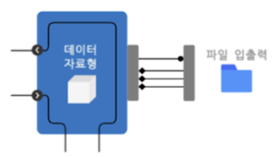
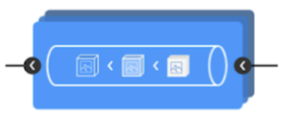
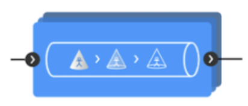
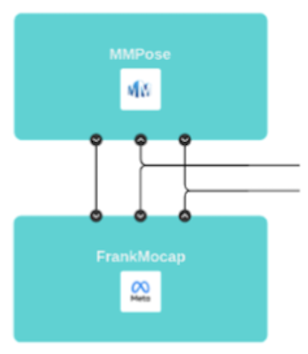
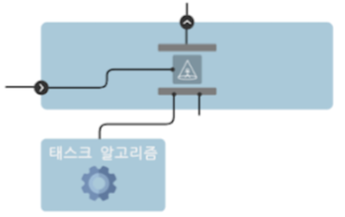
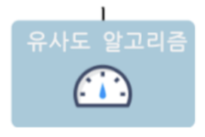

Container
Provides standardized interface for managing and processing human images

Editor
Streamlines image pre-processing for Model with a customizable, reusable pipeline, enabling efficient image preparation

Modifier
Provides standardized interface for post-processing before used in Task, transforming the data while maintaing its type

Model
Uses MMPose to extract pose skeletons and FrankMocap to create 3D Meshes, enabling customization and integration into the Task Module

Task
Uses Model outputs for practical application, simplifying the use of complex algorithms without the need for User development

Metric
Evaluates the resemblance between different pose skeletons
